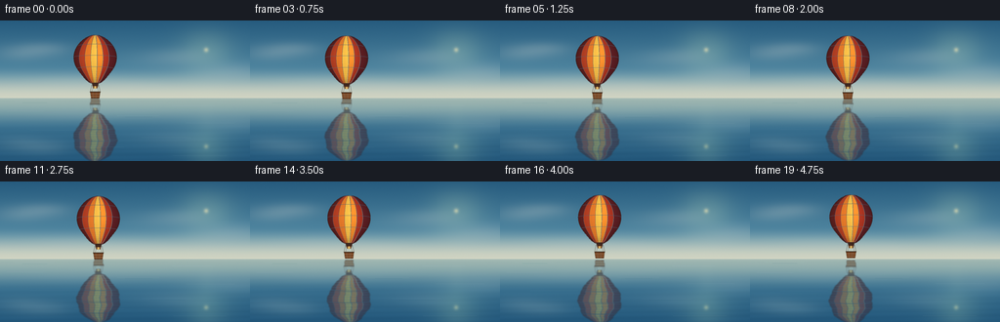
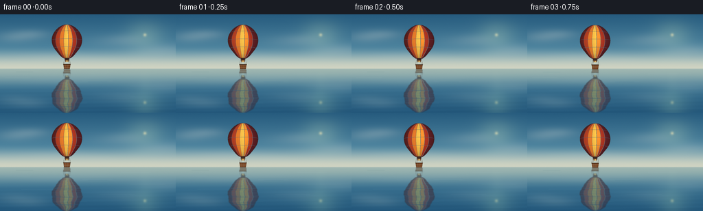

CODING AGENTS AS PIXEL WORLD MODELS
traex/GPT-5.6-Sol · phygen_060
点击播放 · 原生 RGB 像素
逐轮保存的候选
回放视频、检查图与代码变化。
每份候选均可单独播放。实际图片检查记录在下方工具轨迹中。
候选 01播放与检查图
点击播放 · 原生 RGB 像素


展开代码变化
--- 上一保存版本
+++ 本次保存版本
@@ -0,0 +1,273 @@
+from pathlib import Path
+import math
+import numpy as np
+from PIL import Image, ImageDraw, ImageFilter
+from artifact_io import save
+
+# Procedural text-to-video renderer. Everything is drawn at 4x resolution,
+# then downsampled for clean, cinematic antialiasing.
+W, H, N = 256, 144, 20
+S = 4
+WW, HH = W*S, H*S
+HORIZON = 79.5
+rng = np.random.default_rng(6031)
+
+
+def smoothstep(a, b, x):
+ q = np.clip((x-a)/(b-a), 0, 1)
+ return q*q*(3-2*q)
+
+
+def make_background(frame):
+ """Quiet dawn sky and its almost exact mirror in the ocean."""
+ t = frame/(N-1)
+ yy, xx = np.mgrid[0:HH, 0:WW]
+ x = xx/S; y = yy/S
+ hy = HORIZON
+
+ # Sky: cool blue overhead, warm silver/cyan haze on the horizon.
+ q = np.clip(y/hy, 0, 1)[..., None]
+ top = np.array([38., 91., 126.])
+ mid = np.array([102., 157., 178.])
+ hor = np.array([207., 211., 194.])
+ sky = top*(1-q) + mid*q
+ hmix = smoothstep(.57, 1.0, np.clip(y/hy, 0, 1))[..., None]
+ sky = sky*(1-hmix) + hor*hmix
+
+ # Warm light source outside the central subject.
+ sunx, suny = 211.0, 30.0
+ d2 = ((x-sunx)/39.)**2 + ((y-suny)/31.)**2
+ glow = np.exp(-d2*2.1)[..., None]
+ sky += glow*np.array([34., 28., 12.])
+
+ # Airy cloud fields built from soft Gaussian puffs.
+ cloud = np.zeros((HH, WW), np.float32)
+ shadow = np.zeros_like(cloud)
+ clouds = [
+ (31, 31, 23, 6, .34), (49, 29, 18, 5, .30), (18, 35, 17, 5, .22),
+ (163, 40, 27, 7, .22), (185, 37, 20, 6, .27),
+ (228, 54, 31, 7, .30), (247, 51, 22, 6, .23),
+ (73, 63, 34, 5, .18), (135, 67, 29, 4, .14)
+ ]
+ drift = 0.9*t
+ for cx, cy, sx, sy, a in clouds:
+ g = np.exp(-.5*(((x-(cx+drift))/sx)**2 + ((y-cy)/sy)**2))
+ cloud += a*g
+ gs = np.exp(-.5*(((x-(cx+drift))/(sx*1.12))**2 + ((y-(cy+2.0))/(sy*.72))**2))
+ shadow += a*.35*gs
+ cloud *= (y < hy)
+ shadow *= (y < hy)
+ sky = sky*(1-cloud[...,None]*.38) + np.array([235.,235.,222.])*cloud[...,None]*.38
+ sky -= shadow[...,None]*np.array([19.,17.,12.])
+
+ # Tiny diffused sun, veiled rather than graphic.
+ disk = np.exp(-(((x-sunx)/3.2)**2 + ((y-suny)/3.2)**2)*1.7)[...,None]
+ sky = sky*(1-disk*.50) + np.array([255.,239.,185.])*disk*.50
+
+ # Mirror the complete sky mathematically below the horizon.
+ arr = sky.copy()
+ water_mask = y >= hy
+ src_y = np.clip(np.rint((2*hy-y)*S).astype(int), 0, HH-1)
+ reflected = sky[src_y, xx]
+ depth = np.clip((y-hy)/(H-hy), 0, 1)[...,None]
+ water = reflected*(np.array([.76,.86,.91])*(1-depth*.12))
+ water += np.array([1.,8.,13.])*depth
+
+ # Gentle broad undulations, no noisy/choppy texture.
+ wave = (1.8*np.sin(y*1.07 + x*.018 + frame*.23) +
+ 1.1*np.sin(y*.43 - x*.027 - frame*.16))
+ wave *= smoothstep(hy, H, y)
+ water += wave[...,None]*np.array([.50,.72,.82])
+ arr[water_mask] = water[water_mask]
+
+ # Horizon haze and a very subtle vertical solar path on the water.
+ haze = np.exp(-((y-hy)/1.35)**2)[...,None]
+ arr = arr*(1-haze*.20) + np.array([219.,222.,204.])*haze*.20
+ path = np.exp(-((x-sunx)/(4.5+depth[...,0]*11))**2)[...,None] * depth
+ flick = (.35+.65*np.sin(y*2.5 + frame*.3)**2)[...,None]
+ arr += path*flick*np.array([12.,11.,5.])
+
+ # Minuscule deterministic film grain keeps gradients organic.
+ noise = rng.normal(0, .42, (HH,WW,1))
+ arr += noise
+ return np.uint8(np.clip(arr, 0, 255))
+
+
+def envelope_geometry(cx, top):
+ ys = np.linspace(top, top+50.0, 181)
+ tt = (ys-top)/50.0
+ # Round crown, full middle, pronounced tapered skirt.
+ widths = 2.1 + 22.2*(np.clip(np.sin(np.pi*tt), 0, None)**0.61)*(1-.23*tt)
+ widths *= (1 - .07*np.exp(-((tt-.84)/.13)**2))
+ return ys, widths
+
+
+def render_balloon(frame):
+ """Return an RGBA layer with fabric envelope, rigging and basket."""
+ p = frame/(N-1)
+ bob = 1.05*math.sin(2*math.pi*(p*.72)+.25)
+ cx = 97.5 + 6.0*p + .55*math.sin(2*math.pi*p)
+ top = 14.7 + bob
+ ys, widths = envelope_geometry(cx, top)
+
+ # Envelope silhouette mask.
+ mask = Image.new('L', (WW,HH), 0)
+ md = ImageDraw.Draw(mask)
+ right = [((cx+w)*S, y*S) for y,w in zip(ys,widths)]
+ left = [((cx-w)*S, y*S) for y,w in zip(ys[::-1],widths[::-1])]
+ poly = right + left
+ md.polygon(poly, fill=255)
+ mask = mask.filter(ImageFilter.GaussianBlur(.16*S))
+ ma = np.asarray(mask, dtype=np.float32)/255.
+
+ yy, xx = np.mgrid[0:HH,0:WW]
+ xf, yf = xx/S, yy/S
+ tt = np.clip((yf-top)/50., 0, 1)
+ wrow = 2.1 + 22.2*(np.sin(np.pi*tt)**.61)*(1-.23*tt)
+ wrow *= (1-.07*np.exp(-((tt-.84)/.13)**2))
+ u = (xf-cx)/np.maximum(wrow,.2)
+
+ # Traditional vertical balloon gores with warm, readable colors.
+ bounds = np.array([-1.01,-.76,-.49,-.21,.10,.38,.66,1.01])
+ palette = np.array([
+ [105,37,36], [190,67,38], [235,125,43], [249,192,73],
+ [237,137,44], [178,55,35], [101,34,39]
+ ], dtype=float)
+ idx = np.clip(np.searchsorted(bounds[1:],u),0,len(palette)-1)
+ col = palette[idx]
+
+ # Convex fabric shading, warmer low skirt, sunlight from upper right.
+ convex = .67 + .32*np.sqrt(np.clip(1-u*u,0,1))
+ lit = 1 + .12*np.exp(-((u-.22)/.20)**2-((tt-.31)/.38)**2)
+ vertical = .91 + .10*np.exp(-((tt-.37)/.38)**2) - .16*smoothstep(.80,1.0,tt)
+ col = col * (convex*lit*vertical)[...,None]
+ # Fine woven-looking bands, only just visible.
+ col *= (1 + .012*np.sin(yf*3.1))[...,None]
+
+ layer = np.zeros((HH,WW,4),dtype=np.uint8)
+ layer[...,:3] = np.uint8(np.clip(col,0,255))
+ layer[...,3] = np.uint8(np.clip(ma*255,0,255))
+ im = Image.fromarray(layer,'RGBA')
+ d = ImageDraw.Draw(im,'RGBA')
+
+ # Dark tailored outline.
+ outline = [(int(x),int(y)) for x,y in poly] + [(int(poly[0][0]),int(poly[0][1]))]
+ d.line(outline, fill=(58,32,31,210), width=max(2,int(.60*S)), joint='curve')
+
+ # Curved seams emphasize the envelope's volume.
+ for frac in bounds[1:-1]:
+ seam=[]
+ for y,w in zip(ys,widths): seam.append(((cx+frac*w)*S,y*S))
+ d.line(seam, fill=(85,36,29,105), width=max(1,int(.34*S)))
+ # slim catching highlight on sunward edge of seam
+ if frac > -.1:
+ seam2=[((cx+frac*w-.22)*S,y*S) for y,w in zip(ys,widths)]
+ d.line(seam2, fill=(255,216,113,45), width=max(1,int(.20*S)))
+
+ # A few horizontal construction bands follow the silhouette.
+ for frac in (.20,.43,.67):
+ k=int(frac*(len(ys)-1)); y=ys[k]; w=widths[k]
+ d.arc(((cx-w)*S,(y-.8)*S,(cx+w)*S,(y+3.0)*S),180,360,
+ fill=(91,40,30,58),width=max(1,int(.27*S)))
+
+ bottom = top+50
+ # Dark throat and burner assembly.
+ d.polygon([((cx-3.4)*S,(bottom-1.2)*S),((cx+3.4)*S,(bottom-1.2)*S),
+ ((cx+2.5)*S,(bottom+3.4)*S),((cx-2.5)*S,(bottom+3.4)*S)],
+ fill=(63,39,31,255))
+ d.rectangle(((cx-2.3)*S,(bottom+2.3)*S,(cx+2.3)*S,(bottom+4.4)*S), fill=(123,82,46,255))
+ # Small warm burner glow.
+ d.ellipse(((cx-.9)*S,(bottom+2.2)*S,(cx+.9)*S,(bottom+5.1)*S),fill=(255,184,64,160))
+
+ basket_top=bottom+8.2; basket_bottom=bottom+14.7
+ # Rigging, four fine taut ropes.
+ rope=(64,48,37,235)
+ d.line([((cx-3.6)*S,(bottom+1)*S),((cx-5.2)*S,basket_top*S)],fill=rope,width=max(1,int(.38*S)))
+ d.line([((cx+3.6)*S,(bottom+1)*S),((cx+5.2)*S,basket_top*S)],fill=rope,width=max(1,int(.38*S)))
+ d.line([((cx-1.7)*S,(bottom+3)*S),((cx-3.7)*S,basket_top*S)],fill=(103,69,40,210),width=max(1,int(.28*S)))
+ d.line([((cx+1.7)*S,(bottom+3)*S),((cx+3.7)*S,basket_top*S)],fill=(103,69,40,210),width=max(1,int(.28*S)))
+
+ # Wicker basket trapezoid with rim and weave.
+ basket=[((cx-5.1)*S,basket_top*S),((cx+5.1)*S,basket_top*S),
+ ((cx+4.2)*S,basket_bottom*S),((cx-4.1)*S,basket_bottom*S)]
+ d.polygon(basket,fill=(116,67,35,255),outline=(51,38,27,255))
+ d.line([((cx-5.3)*S,basket_top*S),((cx+5.3)*S,basket_top*S)],fill=(54,38,26,255),width=max(2,int(.85*S)))
+ for fy in (.35,.68):
+ y=basket_top+(basket_bottom-basket_top)*fy
+ d.line([((cx-4.7)*S,y*S),((cx+4.7)*S,y*S)],fill=(190,120,57,150),width=max(1,int(.28*S)))
+ for fx in (-2.2,1.2):
+ d.line([((cx+fx)*S,(basket_top+.8)*S),((cx+fx*.82)*S,(basket_bottom-.3)*S)],fill=(67,42,28,150),width=max(1,int(.25*S)))
+
+ return np.asarray(im), (cx,top,basket_bottom)
+
+
+def alpha_composite(base, overlay):
+ a = overlay[...,3:4].astype(np.float32)/255
+ out = base.astype(np.float32)*(1-a) + overlay[...,:3].astype(np.float32)*a
+ return np.uint8(np.clip(out,0,255))
+
+
+def make_reflection(balloon, frame):
+ """Mirror balloon about horizon, with restrained row-wise water refraction."""
+ hy = int(round(HORIZON*S))
+ refl = np.zeros_like(balloon)
+ for yd in range(hy,HH):
+ ys = int(np.clip(2*hy-yd,0,HH-1))
+ depth = (yd-hy)/max(1,HH-hy)
+ # Increasing but still delicate displacement with depth.
+ off_px = (0.22*math.sin(yd*.31 + frame*.21) +
+ 1.15*(depth**1.15)*math.sin(yd*.105-frame*.14))
+ off = int(round(off_px*S))
+ refl[yd] = np.roll(balloon[ys],off,axis=0)
+
+ # Horizontally soften just enough to read as water, not a duplicate graphic.
+ rim = Image.fromarray(refl,'RGBA').filter(ImageFilter.GaussianBlur((.0 if False else .46)*S))
+ refl=np.asarray(rim).copy()
+ y=np.arange(HH)[:,None]
+ dep=np.clip((y-hy)/(HH-hy),0,1)
+ # Keep the mirror clearly visible, fading modestly into the foreground.
+ alpha_scale=(.64-.18*dep)
+ ripple_mod=.86+.14*np.sin(y*.31+frame*.27)**2
+ refl[...,3]=np.uint8(np.clip(refl[...,3].astype(float)*alpha_scale*ripple_mod,0,255))
+ # Water absorbs reds and contrast.
+ rgb=refl[...,:3].astype(float)
+ rgb=rgb*np.array([.72,.79,.83])+np.array([8.,13.,16.])
+ refl[...,:3]=np.uint8(np.clip(rgb,0,255))
+ return refl
+
+
+def add_water_details(im, frame):
+ """Sparse horizontal glints sell a serene glass surface."""
+ d=ImageDraw.Draw(im,'RGBA')
+ # deterministic locations; strokes stay understated.
+ lines=[(83,15,55),(87,176,220),(93,7,44),(98,120,163),(105,190,240),
+ (112,31,80),(120,145,196),(130,76,127),(138,177,232)]
+ for i,(y,x0,x1) in enumerate(lines):
+ wob=.34*math.sin(frame*.22+i*1.7)
+ yy=(y+wob)*S
+ d.line([(x0*S,yy),(x1*S,yy)],fill=(213,229,226,18 if y>100 else 24),width=max(1,int(.25*S)))
+ if i%3==0:
+ d.line([((x0+8)*S,(yy+1.1*S)),((x1-7)*S,(yy+1.1*S))],fill=(32,92,118,13),width=1*S)
+ return im
+
+
+def render_frame(i):
+ base=make_background(i)
+ balloon,_=render_balloon(i)
+ reflection=make_reflection(balloon,i)
+ comp=alpha_composite(base,reflection)
+ hi=Image.fromarray(comp,'RGB')
+ hi=add_water_details(hi,i)
+ comp=np.asarray(hi)
+ comp=alpha_composite(comp,balloon)
+ # Downsample after all layering for natural edges and fine ropes.
+ return np.asarray(Image.fromarray(comp,'RGB').resize((W,H),Image.Resampling.LANCZOS))
+
+
+def main():
+ frames=np.stack([render_frame(i) for i in range(N)]).astype(np.uint8)
+ assert frames.shape==(20,144,256,3) and frames.dtype==np.uint8
+ save(frames,Path(__file__).resolve().parent)
+
+if __name__=='__main__':
+ main()
可观测工具轨迹
实际执行的命令与返回图片。
命令 1exit 0
/bin/bash -lc "cat prompt.txt && printf '\\n--- RULES ---\\n' && cat GENERATION_RULES.md && printf '\\n--- SPEC ---\\n' && cat task_spec.json"
命令 2exit 0
/bin/bash -lc "find . -maxdepth 2 -type f -printf '%p\\n' | sort && printf '\\n--- tools ---\\n' && command -v ffmpeg || true; command -v blender || true; command -v convert || true; python3 - <<'PY'
try:
import cv2; print('cv2',cv2.__version__)
except Exception as e: print('no cv2',e)
try:
from PIL import Image; print('PIL yes')
except Exception as e: print('no PIL',e)
try:
import numpy; print('numpy',numpy.__version__)
except Exception as e: print('no numpy',e)
PY"命令 3exit 0
/bin/bash -lc 'cat artifact_io.py'
命令 4exit 0
/bin/bash -lc "python3 - <<'PY' mods=['scipy','skimage','imageio','matplotlib'] for m in mods: try: x=__import__(m); print(m,'yes',getattr(x,'__version__','')) except Exception as e: print(m,'no') PY"
命令 5exit 2
/bin/bash -lc "cat > generate.py <<'PY'
from pathlib import Path
import math
import numpy as np
from PIL import Image, ImageDraw, ImageFilter
from artifact_io import save
# Procedural text-to-video renderer. Everything is drawn at 4x resolution,
# then downsampled for clean, cinematic antialiasing.
W, H, N = 256, 144, 20
S = 4
WW, HH = W*S, H*S
HORIZON = 79.5
rng = np.random.default_rng(6031)
def smoothstep(a, b, x):
q = np.clip((x-a)/(b-a), 0, 1)
return q*q*(3-2*q)
def make_background(frame):
\"\"\"Quiet dawn sky and its almost exact mirror in the ocean.\"\"\"
t = frame/(N-1)
yy, xx = np.mgrid[0:HH, 0:WW]
x = xx/S; y = yy/S
hy = HORIZON
# Sky: cool blue overhead, warm silver/cyan haze on the horizon.
q = np.clip(y/hy, 0, 1)[..., None]
top = np.array([38., 91., 126.])
mid = np.array([102., 157., 178.])
hor = np.array([207., 211., 194.])
sky = top*(1-q) + mid*q
hmix = smoothstep(.57, 1.0, np.clip(y/hy, 0, 1))[..., None]
sky = sky*(1-hmix) + hor*hmix
# Warm light source outside the central subject.
sunx, suny = 211.0, 30.0
d2 = ((x-sunx)/39.)**2 + ((y-suny)/31.)**2
glow = np.exp(-d2*2.1)[..., None]
sky += glow*np.array([34., 28., 12.])
# Airy cloud fields built from soft Gaussian puffs.
cloud = np.zeros((HH, WW), np.float32)
shadow = np.zeros_like(cloud)
clouds = [
(31, 31, 23, 6, .34), (49, 29, 18, 5, .30), (18, 35, 17, 5, .22),
(163, 40, 27, 7, .22), (185, 37, 20, 6, .27),
(228, 54, 31, 7, .30), (247, 51, 22, 6, .23),
(73, 63, 34, 5, .18), (135, 67, 29, 4, .14)
]
drift = 0.9*t
for cx, cy, sx, sy, a in clouds:
g = np.exp(-.5*(((x-(cx+drift))/sx)**2 + ((y-cy)/sy)**2))
cloud += a*g
gs = np.exp(-.5*(((x-(cx+drift))/(sx*1.12))**2 + ((y-(cy+2.0))/(sy*.72))**2))
shadow += a*.35*gs
cloud *= (y < hy)
shadow *= (y < hy)
sky = sky*(1-cloud[...,None]*.38) + np.array([235.,235.,222.])*cloud[...,None]*.38
sky -= shadow[...,None]*np.array([19.,17.,12.])
# Tiny diffused sun, veiled rather than graphic.
disk = np.exp(-(((x-sunx)/3.2)**2 + ((y-suny)/3.2)**2)*1.7)[...,None]
sky = sky*(1-disk*.50) + np.array([255.,239.,185.])*disk*.50
# Mirror the complete sky mathematically below the horizon.
arr = sky.copy()
water_mask = y >= hy
src_y = np.clip(np.rint((2*hy-y)*S).astype(int), 0, HH-1)
reflected = sky[src_y, xx]
depth = np.clip((y-hy)/(H-hy), 0, 1)[...,None]
water = reflected*(np.array([.76,.86,.91])*(1-depth*.12))
water += np.array([1.,8.,13.])*depth
# Gentle broad undulations, no noisy/choppy texture.
wave = (1.8*np.sin(y*1.07 + x*.018 + frame*.23) +
1.1*np.sin(y*.43 - x*.027 - frame*.16))
wave *= smoothstep(hy, H, y)
water += wave[...,None]*np.array([.50,.72,.82])
arr[water_mask] = water[water_mask]
# Horizon haze and a very subtle vertical solar path on the water.
haze = np.exp(-((y-hy)/1.35)**2)[...,None]
arr = arr*(1-haze*.20) + np.array([219.,222.,204.])*haze*.20
path = np.exp(-((x-sunx)/(4.5+depth[...,0]*11))**2)[...,None] * depth
flick = (.35+.65*np.sin(y*2.5 + frame*.3)**2)[...,None]
arr += path*flick*np.array([12.,11.,5.])
# Minuscule deterministic film grain keeps gradients organic.
noise = rng.normal(0, .42, (HH,WW,1))
arr += noise
return np.uint8(np.clip(arr, 0, 255))
def envelope_geometry(cx, top):
ys = np.linspace(top, top+50.0, 181)
tt = (ys-top)/50.0
# Round crown, full middle, pronounced tapered skirt.
widths = 2.1 + 22.2*(np.sin(np.pi*tt)**0.61)*(1-.23*tt)
widths *= (1 - .07*np.exp(-((tt-.84)/.13)**2))
return ys, widths
def render_balloon(frame):
\"\"\"Return an RGBA layer with fabric envelope, rigging and basket.\"\"\"
p = frame/(N-1)
bob = 1.05*math.sin(2*math.pi*(p*.72)+.25)
cx = 97.5 + 6.0*p + .55*math.sin(2*math.pi*p)
top = 14.7 + bob
ys, widths = envelope_geometry(cx, top)
# Envelope silhouette mask.
mask = Image.new('L', (WW,HH), 0)
md = ImageDraw.Draw(mask)
right = [((cx+w)*S, y*S) for y,w in zip(ys,widths)]
left = [((cx-w)*S, y*S) for y,w in zip(ys[::-1],widths[::-1])]
poly = right + left
md.polygon(poly, fill=255)
mask = mask.filter(ImageFilter.GaussianBlur(.16*S))
ma = np.asarray(mask, dtype=np.float32)/255.
yy, xx = np.mgrid[0:HH,0:WW]
xf, yf = xx/S, yy/S
tt = np.clip((yf-top)/50., 0, 1)
wrow = 2.1 + 22.2*(np.sin(np.pi*tt)**.61)*(1-.23*tt)
wrow *= (1-.07*np.exp(-((tt-.84)/.13)**2))
u = (xf-cx)/np.maximum(wrow,.2)
# Traditional vertical balloon gores with warm, readable colors.
bounds = np.array([-1.01,-.76,-.49,-.21,.10,.38,.66,1.01])
palette = np.array([
[105,37,36], [190,67,38], [235,125,43], [249,192,73],
[237,137,44], [178,55,35], [101,34,39]
], dtype=float)
idx = np.clip(np.searchsorted(bounds[1:],u),0,len(palette)-1)
col = palette[idx]
# Convex fabric shading, warmer low skirt, sunlight from upper right.
convex = .67 + .32*np.sqrt(np.clip(1-u*u,0,1))
lit = 1 + .12*np.exp(-((u-.22)/.20)**2-((tt-.31)/.38)**2)
vertical = .91 + .10*np.exp(-((tt-.37)/.38)**2) - .16*smoothstep(.80,1.0,tt)
col = col * (convex*lit*vertical)[...,None]
# Fine woven-looking bands, only just visible.
col *= (1 + .012*np.sin(yf*3.1))[...,None]
layer = np.zeros((HH,WW,4),dtype=np.uint8)
layer[...,:3] = np.uint8(np.clip(col,0,255))
layer[...,3] = np.uint8(np.clip(ma*255,0,255))
im = Image.fromarray(layer,'RGBA')
d = ImageDraw.Draw(im,'RGBA')
# Dark tailored outline.
outline = [(int(x),int(y)) for x,y in poly] + [(int(poly[0][0]),int(poly[0][1]))]
d.line(outline, fill=(58,32,31,210), width=max(2,int(.60*S)), joint='curve')
# Curved seams emphasize the envelope's volume.
for frac in bounds[1:-1]:
seam=[]
for y,w in zip(ys,widths): seam.append(((cx+frac*w)*S,y*S))
d.line(seam, fill=(85,36,29,105), width=max(1,int(.34*S)))
# slim catching highlight on sunward edge of seam
if frac > -.1:
seam2=[((cx+frac*w-.22)*S,y*S) for y,w in zip(ys,widths)]
d.line(seam2, fill=(255,216,113,45), width=max(1,int(.20*S)))
# A few horizontal construction bands follow the silhouette.
for frac in (.20,.43,.67):
k=int(frac*(len(ys)-1)); y=ys[k]; w=widths[k]
d.arc(((cx-w)*S,(y-.8)*S,(cx+w)*S,(y+3.0)*S),180,360,
fill=(91,40,30,58),width=max(1,int(.27*S)))
bottom = top+50
# Dark throat and burner assembly.
d.polygon([((cx-3.4)*S,(bottom-1.2)*S),((cx+3.4)*S,(bottom-1.2)*S),
((cx+2.5)*S,(bottom+3.4)*S),((cx-2.5)*S,(bottom+3.4)*S)],
fill=(63,39,31,255))
d.rectangle(((cx-2.3)*S,(bottom+2.3)*S,(cx+2.3)*S,(bottom+4.4)*S), fill=(123,82,46,255))
# Small warm burner glow.
d.ellipse(((cx-.9)*S,(bottom+2.2)*S,(cx+.9)*S,(bottom+5.1)*S),fill=(255,184,64,160))
basket_top=bottom+8.2; basket_bottom=bottom+14.7
# Rigging, four fine taut ropes.
rope=(64,48,37,235)
d.line([((cx-3.6)*S,(bottom+1)*S),((cx-5.2)*S,basket_top*S)],fill=rope,width=max(1,int(.38*S)))
d.line([((cx+3.6)*S,(bottom+1)*S),((cx+5.2)*S,basket_top*S)],fill=rope,width=max(1,int(.38*S)))
d.line([((cx-1.7)*S,(bottom+3)*S),((cx-3.7)*S,basket_top*S)],fill=(103,69,40,210),width=max(1,int(.28*S)))
d.line([((cx+1.7)*S,(bottom+3)*S),((cx+3.7)*S,basket_top*S)],fill=(103,69,40,210),width=max(1,int(.28*S)))
# Wicker basket trapezoid with rim and weave.
basket=[((cx-5.1)*S,basket_top*S),((cx+5.1)*S,basket_top*S),
((cx+4.2)*S,basket_bottom*S),((cx-4.1)*S,basket_bottom*S)]
d.polygon(basket,fill=(116,67,35,255),outline=(51,38,27,255))
d.line([((cx-5.3)*S,basket_top*S),((cx+5.3)*S,basket_top*S)],fill=(54,38,26,255),width=max(2,int(.85*S)))
for fy in (.35,.68):
y=basket_top+(basket_bottom-basket_top)*fy
d.line([((cx-4.7)*S,y*S),((cx+4.7)*S,y*S)],fill=(190,120,57,150),width=max(1,int(.28*S)))
for fx in (-2.2,1.2):
d.line([((cx+fx)*S,(basket_top+.8)*S),((cx+fx*.82)*S,(basket_bottom-.3)*S)],fill=(67,42,28,150),width=max(1,int(.25*S)))
return np.asarray(im), (cx,top,basket_bottom)
def alpha_composite(base, overlay):
a = overlay[...,3:4].astype(np.float32)/255
out = base.astype(np.float32)*(1-a) + overlay[...,:3].astype(np.float32)*a
return np.uint8(np.clip(out,0,255))
def make_reflection(balloon, frame):
\"\"\"Mirror balloon about horizon, with restrained row-wise water refraction.\"\"\"
hy = int(round(HORIZON*S))
refl = np.zeros_like(balloon)
for yd in range(hy,HH):
ys = int(np.clip(2*hy-yd,0,HH-1))
depth = (yd-hy)/max(1,HH-hy)
# Increasing but still delicate displacement with depth.
off_px = (0.22*math.sin(yd*.31 + frame*.21) +
1.15*(depth**1.15)*math.sin(yd*.105-frame*.14))
off = int(round(off_px*S))
refl[yd] = np.roll(balloon[ys],off,axis=0)
# Horizontally soften just enough to read as water, not a duplicate graphic.
rim = Image.fromarray(refl,'RGBA').filter(ImageFilter.GaussianBlur((.0 if False else .46)*S))
refl=np.asarray(rim).copy()
y=np.arange(HH)[:,None]
dep=np.clip((y-hy)/(HH-hy),0,1)
# Keep the mirror clearly visible, fading modestly into the foreground.
alpha_scale=(.64-.18*dep)
ripple_mod=.86+.14*np.sin(y*.31+frame*.27)**2
refl[...,3]=np.uint8(np.clip(refl[...,3].astype(float)*alpha_scale*ripple_mod,0,255))
# Water absorbs reds and contrast.
rgb=refl[...,:3].astype(float)
rgb=rgb*np.array([.72,.79,.83])+np.array([8.,13.,16.])
refl[...,:3]=np.uint8(np.clip(rgb,0,255))
return refl
def add_water_details(im, frame):
\"\"\"Sparse horizontal glints sell a serene glass surface.\"\"\"
d=ImageDraw.Draw(im,'RGBA')
# deterministic locations; strokes stay understated.
lines=[(83,15,55),(87,176,220),(93,7,44),(98,120,163),(105,190,240),
(112,31,80),(120,145,196),(130,76,127),(138,177,232)]
for i,(y,x0,x1) in enumerate(lines):
wob=.34*math.sin(frame*.22+i*1.7)
yy=(y+wob)*S
d.line([(x0*S,yy),(x1*S,yy)],fill=(213,229,226,18 if y>100 else 24),width=max(1,int(.25*S)))
if i%3==0:
d.line([((x0+8)*S,(yy+1.1*S)),((x1-7)*S,(yy+1.1*S))],fill=(32,92,118,13),width=1*S)
return im
def render_frame(i):
base=make_background(i)
balloon,_=render_balloon(i)
reflection=make_reflection(balloon,i)
comp=alpha_composite(base,reflection)
hi=Image.fromarray(comp,'RGB')
hi=add_water_details(hi,i)
comp=np.asarray(hi)
comp=alpha_composite(comp,balloon)
# Downsample after all layering for natural edges and fine ropes.
return np.asarray(Image.fromarray(comp,'RGB').resize((W,H),Image.Resampling.LANCZOS))
def main():
frames=np.stack([render_frame(i) for i in range(N)]).astype(np.uint8)
assert frames.shape==(20,144,256,3) and frames.dtype==np.uint8
save(frames,Path(__file__).resolve().parent)
if __name__=='__main__':
main()
PY
python3 generate.py
ls -lh pixels.npz inspection.png index.html frames/00.png"命令 6exit 0
/bin/bash -lc "python3 generate.py && ls -lh pixels.npz inspection.png index.html frames/00.png && python3 - <<'PY'
import numpy as np
from PIL import Image
p=np.load('pixels.npz')['pixels']
print('pixels packed',p.shape,p.dtype,hex(int(p.min())),hex(int(p.max())))
ims=np.stack([np.asarray(Image.open(f'frames/{i:02}.png')) for i in range(20)])
print('frames',ims.shape,ims.dtype,'range',ims.min(),ims.max())
print('mean abs consecutive delta',np.abs(np.diff(ims.astype(float),axis=0)).mean())
PY"命令 7exit 0
/bin/bash -lc 'command -v chafa || true; command -v viu || true; command -v jp2 || true; command -v img2txt || true; command -v python3'
命令 8exit 0
/bin/bash -lc "python3 - <<'PY'
import numpy as np
from PIL import Image
ims=np.stack([np.asarray(Image.open(f'frames/{i:02d}.png')).astype(float) for i in range(20)])
# Temporal motion and scene diagnostics.
for i in [0,5,10,15,19]:
a=ims[i]
print(i,'sky',a[:79].mean((0,1)).round(1),'water',a[80:].mean((0,1)).round(1), 'contrast',round(a.std(),2))
# Detect warm balloon pixels in sky and reflected warm pixels under horizon.
for i in [0,9,19]:
a=ims[i]
warm=(a[:,:,0]>a[:,:,2]*1.25)&(a[:,:,0]>110)&(np.indices(a.shape[:2])[0]<80)
rwarm=(a[:,:,0]>a[:,:,2]*1.08)&(a[:,:,0]>70)&(np.indices(a.shape[:2])[0]>=80)
ys,xs=np.where(warm); yr,xr=np.where(rwarm)
print('frame',i,'balloon bbox', (xs.min(),ys.min(),xs.max(),ys.max()),'warm pixels',len(xs),
'reflection bbox',(xr.min(),yr.min(),xr.max(),yr.max()),'refl pixels',len(xr))
# Motion centroid
for i in range(20):
a=ims[i]; yy,xx=np.indices(a.shape[:2]); m=(a[:,:,0]>a[:,:,2]*1.25)&(a[:,:,0]>120)&(yy<79)
print(i,round((xx*m).sum()/m.sum(),2),round((yy*m).sum()/m.sum(),2),end='; ')
print()
PY"保存候选 1 份；完成命令 8 次；可验证图片返回 0 张。原始 API 响应与完整日志保留在本地。